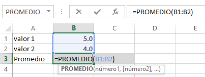
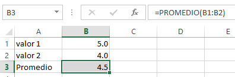
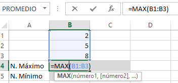
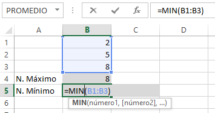
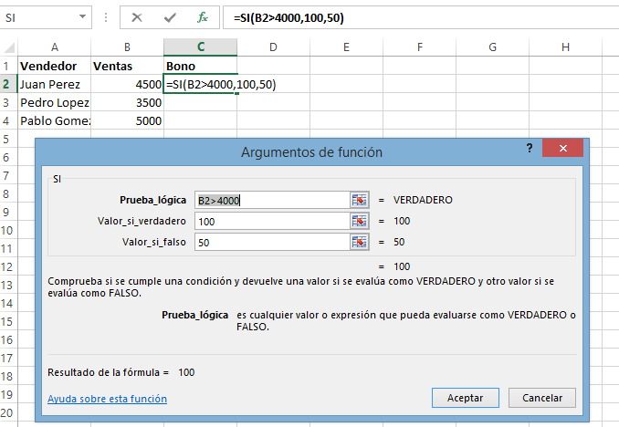
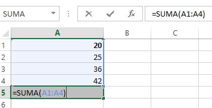
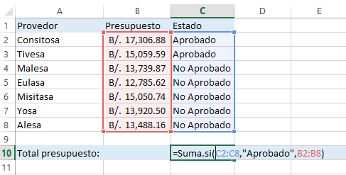
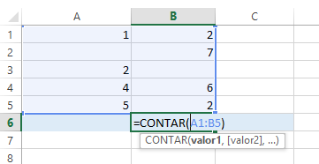

Promedio, Máximo y Mínimo, Si, Contar, etc.
- PROMEDIO: Devuelve la media aritmética de una serie de valores. Con la expresión: =PROMEDIO(rango).
 
- MÁXIMO Y MÍNIMO: Con esta función Excel indica el valor máximo y mínimo de un conjunto de valores. Así =MAX(rango).
 
- SI: Es parte del rango del grupo de funciones Lógicas y permite evaluar una condición para determinar si es falso o verdadero. La función SI es de gran ayuda para tomar decisiones en base al resultado obtenido en la prueba lógica. A continuación la Sintaxis de la función SI:
- Prueba_lógica (obligatoria): Expresa que utilice un operador lógico o también puede ser una función de Excel que será evaluada para conocer si el resultado es VERDADERO o FALSO.
- Valor_si_verdadero (opcional): El valor que se devolverá en caso de que el resultado de Prueba_lógica sea VERDADERO.
- Valor_si_falso (opcional): El valor que se devolverá en caso de que el resultado de la Prueba_lógica sea FALSO.
- SUMA: suma los números de un conjunto de datos.

- SUMA.SI: Suma los valores de un rango siempre y cuando cumplan con las condiciones especificadas. =SUMA.SI(rango, condición, [rango_suma])
- Rango (obligatorio): El rango de celda a las que se le aplicará la condición de suma.
- Condición (obligatorio): La condición que se debe de cumplir para ser tomado en cuenta para la suma.
- Rango_suma (opcional): El rango de celdas que será sumada. Si es omitido se sumarán los valores del primer argumento.

- CONTAR: Cuenta los valores numéricos de un rango.

- CONTAR.SI: Cuenta las celdas, dentro del rango, que no están en blanco y que cumple con el criterio especificado. =CONTAR.SI(rango,criterio).
- Rango: Es el rango dentro del cual desea contar las celdas.
- Criterio: Es el criterio en forma de número, expresión, referencia a celda o texto, que determina las celdas que van a contar.